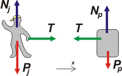

NO ME SALEN
PROBLEMAS RESUELTOS DE FÍSICA DEL CBC
(Leyes de Newton, vínculos)
|
|

|
| |
FIS d14 - Un joven de 80 kgf se encuentra quieto
sobre la superficie de un lago congelado.
Tirando de una soga ideal, con una fuerza constante
de módulo igual a 6 N, el joven desplaza un
paquete de masa igual a 12 kg. Considerar que
inicialmente el paquete se encontraba en reposo
sobre la superficie del lago y a 15 m del joven,
además puede despreciar todo rozamiento con
la superficie del lago.
a) ¿Cuál es la aceleración del paquete?
b) ¿Cuál es la aceleración del joven?
c) Calcular a qué distancia de su posición inicial
se halla el joven cuando finalmente se
encuentra con el paquete. |
| |
|
| No me voy a cansar de decirlo: ya sabés cómo empieza esto... por los DCLs. |
|
|
|  |
Ya tenés cierta cancha, de modo que si me lo permitís, vamos a trabajar solamente con las ecuaciones de Newton para el eje horizontal.
T = mj . aj [1]
— T = mp . ap [2] |
|
 |
La principal novedad respecto a los ejercicios anteriores es que los cuerpos tienen aceleraciones independientes, por eso no podemos olvidarnos de identificar cada aceleración: la del joven, aj, y la del paquete, ap.
La fuerza que hace el joven sobre la cuerda es igual a la que la cuerda hace sobre él (principio de acción y reacción. De modo que:
aj = T / mj
aj = 6 N / 80 kgf
|
|
|
De la misma manera:
ap = T / mp
ap = 6 N / 12 kgf
|
|
| Para saber dónde se encuentran el jovey y el paquete elegís un sistema de referencia, escribís las ecuaciones de ambos y les pedía que hablen del encuentro. Lo hiciste 743 veces antes y no vas a tener problemas en hacerlo en esta. Si tuvieses problemas podés ver un ejercicio casi idéntico acá. |
| DESAFIO: |
| Algunos derechos reservados, otros no.
Se permite su reproducción citando la fuente. Última actualización mar-16. Buenos Aires, Argentina. |
|
|
|